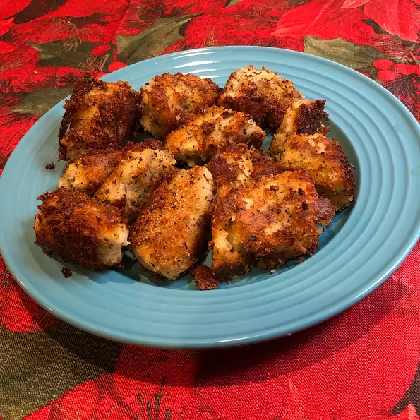

Baked Chicken Nuggets

Description:
A real kid-pleaser! Adults will enjoy this recipe for a tasty appetizer, too!
Serve warm with your favorite dipping sauces if desired.
Ingredients:
- 3 skinless, boneless chicken breasts
- 1 cup Italian seasoned bread crumbs
- ½ cup grated Parmesan cheese
- 1 teaspoon salt
- 1 teaspoon dried thyme
- 1 tablespoon dried basil
- ½ cup butter, melted
Steps:
- Preheat oven to 400 degrees F (200 degrees C).
- Cut chicken breasts into 1 1/2-inch sized pieces.
In a medium bowl, mix together the bread crumbs, cheese, salt, thyme and basil.
Mix well. Put melted butter in a bowl or dish for dipping.
- Dip chicken pieces into the melted butter first, then coat with the breadcrumb mixture.
Place the well-coated chicken pieces on a lightly greased cookie sheet in a single layer,
and bake in the preheated oven for 20 minutes.